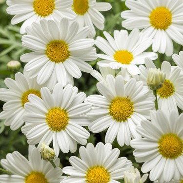
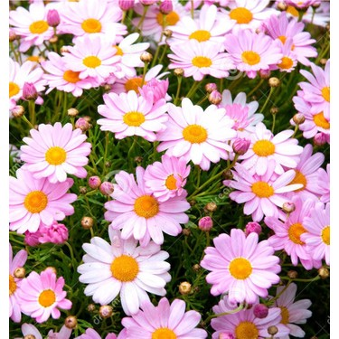

ÇİÇEK ÇEŞİTLERİ
Anasayfa
Güller
Papatyalar
Orkideler
Saksı Çiçekleri
Diğer Çiçekler
PAPATYALAR
BEYAZ PAPATYA
Beyaz papatyanın anlamı, saf, masum ve sonsuz sevgi demektir. Beyaz papatyalar aynı zamanda bolluk ve sıhhat anlamlarını da ifade eder. Yeni başlangıçları ve gerçek aşkı temsil etmesinden dolayı yeni aşk yaşayan çiftler birbirlerine beyaz papatya hediye edebilir.Papatya narin ve zarif güzelliği ile saflığı simgeler.

SARI PAPATYA
Sarı papatyanın anlamı ise; mutluluk, sevinç ve koşulsuz sevgidir. Beyaz papatyadan daha nadir görüldüğü için aşk anlamında daha büyük derinliği yansıtır, bu nedenle henüz tanışma aşamasında olanlar beyaz papatya hediyesiyle yetinmeyip ilerleyen dönemde sarı papatya alabilir.
PEMBE PAPATYA
Bazı çiçeklerin renkleri ve bu renklerin taşıdıkları anlamlar sevdiklerinize özel mesajlar iletmek istediğinizde en doğru seçimi yapmanızı sağlar. Pembe renkteki papatyalardan oluşan Pembe Papatyalar Çiçek Buketi sevgi, romantizm ve içtenliği simgeler.
